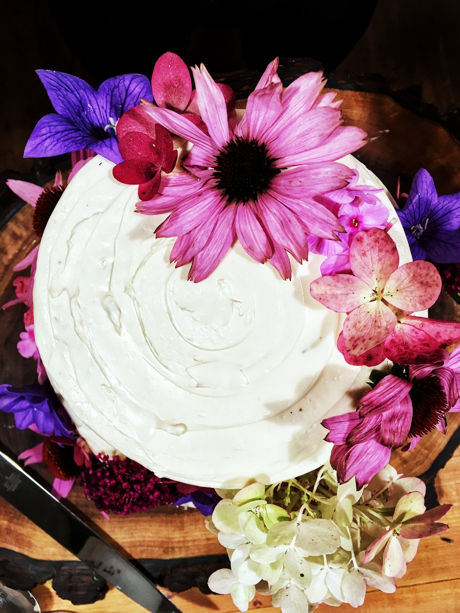

My Takeaway From The Culinary Experience
October 16, 2018
Inspiration: Food52
There are so many food bloggers out there, and while I am definitely inspired by many of them, there is a particular group that speaks to me: Food52. In fact, if I’m being totally honest, a lot of content and styling on Brad & Butter is modeled after or inspired by Food52.
What I love most about Food52 is it’s ability to transcend past classic food-related editorial content and naturally use the culinary experience as a medium to portray lifestyle. Their site has content related to food, travel, design, decor, and so on all in one package. But personally, I’ve always seen food & lifestyle as one package; you can’t have one without the other.
A perfect example of Food52’s influence on Brad & Butter, my life, and my ideals is my most recent lifestyle article on the role food played in keeping my family together. This article was inspired by a piece published by Food52 Senior Editor Eric Kim and touches on how food played a role in his family’s unity during tough times. Not going to lie, I shed a couple too many tears reading his story.
The Takeaway
But Food52 has given me so much more than just inspiration for lifestyle, food, & drink content. It has completely changed the way I see the relationship between food and lifestyle. In fact, their cooking manifesto is “Eat Thoughtfully, Live Joyfully”, encompassing this notion that food & lifestyle go hand-in-hand. This is my biggest takeaway from being an avid fan & follower of Food52.
Throughout cultures and customs, food is traditionally a part of our lives. Not only is it an essential component to our survival, but it also a symbol for our emotions, achievements, and history. Take, for example, celebratory food. Across cultures, food is a representation of celebration in regards to a specific concept, theme, or historical point in time.
That’s on a yearly basis, but I can pick this apart even more. From a biological & psychological perspective, our body’s sense of smell is a crucial component of our culinary experiences. Without our sense of smell, taste would be impossible. So have you ever wondered why our sense of smell is so connected to emotions? The childhood memories of mom’s chocolate chip cookies (or in my case, mine) or grandma’s signature roasted chicken (again, in my case, braised pork chops) are ingrained into memory & emotion.
According to what I remember from my high school psychology class, our olfactory bulb is connected directly to our amygdala, the brain’s emotion control center, and the hippocampus, the memory factory. Thus, unlike our other senses, sensory information via smell is much more likely to conjure up specific memories & emotions. Basically, the culinary experience is a biological trait within us. It’s a joy we get to inevitably experience.
Spread the Love
This perspective on food & lifestyle has taught me so much about the role food plays in our day-to-day lives. The way we experience food and the pleasure & joy we acquire from doing so is a blessing. And everyday, I have the pleasure of being reminded of this. Whether it be through the meals I eat everyday, or special occasion events, I am constantly amazed at the presence of food in my life. Nothing could ever make me happier.
Just this past weekend, I had the incredible honor of making a wedding cake for a beautiful couple, an opportunity that I would definitely take given another chance. For me, cake is one of those foods that really speaks to how we use food to connect with other people. Whether it be a birthday, special holiday, or wedding, cakes are often used as a medium to express happiness, joy, and love.
Weddings always give me mixed feelings. Of course, everyone tends to either be in a state of happiness, whether that is shown through laughter or tears. But it holds true that love is the basis for all these other emotions, something that made the corners of my mouth tilt upwards upon such realization.
However, I’ve always thought the world needed a little more love (SUCH an Aries thing to say). There is not a single day that goes by on campus in which I wind up having a conversation with someone about all the hate that has manifested in our world, and it saddens me to think that we are so far from being able to do the simple act of loving & treasuring one another. Which is why, for me, this wedding cake meant much more than an opportunity to expand Brad & Butter. As the night progressed, it became my light at the end of the tunnel. One step closer to the love this world so desperately needs.
Perhaps I’m looking at this all in a negative light. Or perhaps I just havn’t really experienced how love works in this world. I’m confident, however, that no matter what love, or any emotion, means to this world, we will never forget it’s ties to food. Not just our past experiences between food & love, but the raw emotions that are drawn from such experiences.
In this day & age, we have almost inadvertently combined food & lifestyle into one melting pot, giving us another way to express our emotions and desires. Giving us another way to inspire. Today, I encourage you to spread some love, spread some inspiration, because somebody out there is going to need it.
Love,
Bradley
Meet the brad behind the butter...
Hello and welcome to you new home! I'm Bradley, a junior Hotelie, a self-taught baker, bartender, and a flatlay freak. Here on Brad & Butter, I bake, shake, style, and snap tot tell inspiring stories. This blog is a manifestation of all the things in life at have inspired me to act upon something. And in turn, I hope that whatever I wrtie, bake, or shake can inspire other people. Click here to learn about me...
Read Moreeat pretty
drink pretty
sing pretty
live pretty
you are pretty
recent posts


leave a reply